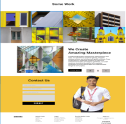
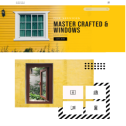
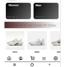
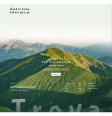
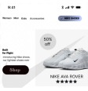
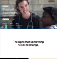

SAMEER
DESIGNS
DESIGNS

My Process
Hello, I’m Sameer Chauhan.
A UI/UX Designer with an engineering
foundation.
I turn complex logic into intuitive,
high converting digital products.
A UI/UX Designer with an engineering
foundation.
I turn complex logic into intuitive,
high converting digital products.
Projects
View my work >
I am a UI/UX designer and B.Tech student at NCER bridging the
gap between clean engineering and intuitive digital experiences.
I design visually sharp, high-converting websites that solve real problems and feel effortless to use. Driven by curiosity and
user-centered design.
I transform complex ideas into functional, aesthetically compelling interfaces.
gap between clean engineering and intuitive digital experiences.
I design visually sharp, high-converting websites that solve real problems and feel effortless to use. Driven by curiosity and
user-centered design.
I transform complex ideas into functional, aesthetically compelling interfaces.
About & Skills Snapshot
A high-contrast, modern landing page designed for an architectural glazing
and premium window manufacturing brand.
MASTER CRAFTED & WINDOWS.
Design
Website
UI/UX


Design
Design
Design
Mobile
Website
Website
UI/UX
UI/UX
UI/UX






NIKE FEEL EVERY STEP.
Where lasting change brgins.
A modern, high-conversion moblie storefront concept designed to streamline
product discovery and enhance visual browsing for footwear enthuasiasts.
Trova is a hiking agency built for people who wantto go further. Small
groups, expert local guidesand routes most people never find on their own.
This project is end to end design clone of modern wellness coaching website,
undertaken to study effective layout strategy.
->
->
->
->
Get Connected to me.
@ 2026 Sameer.All rights reserved